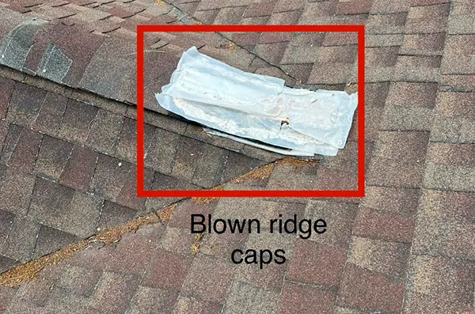
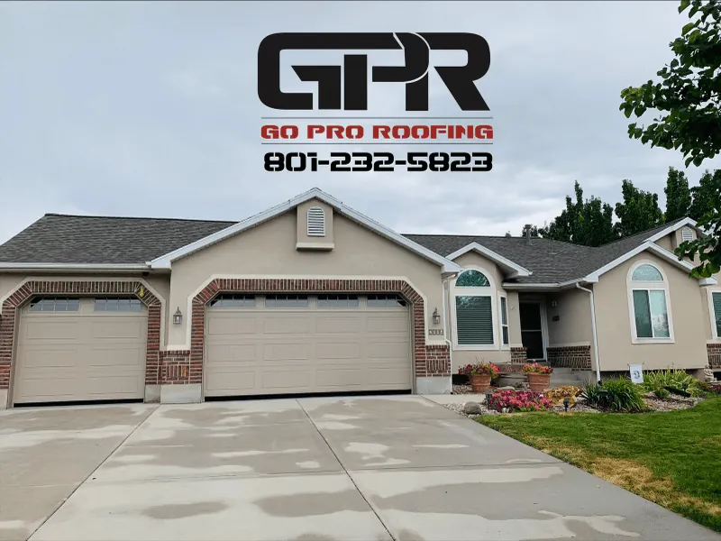
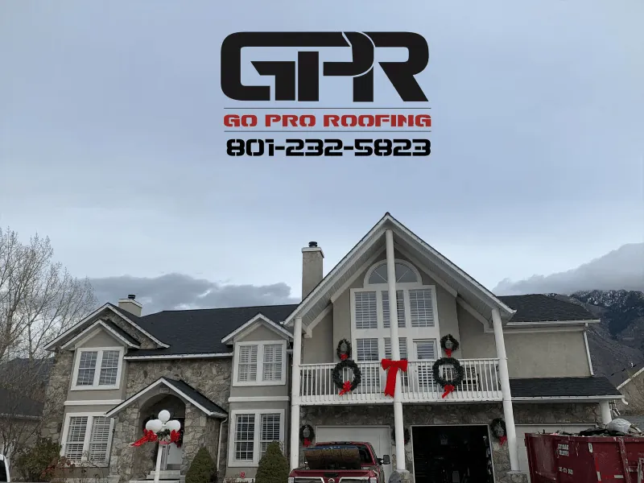
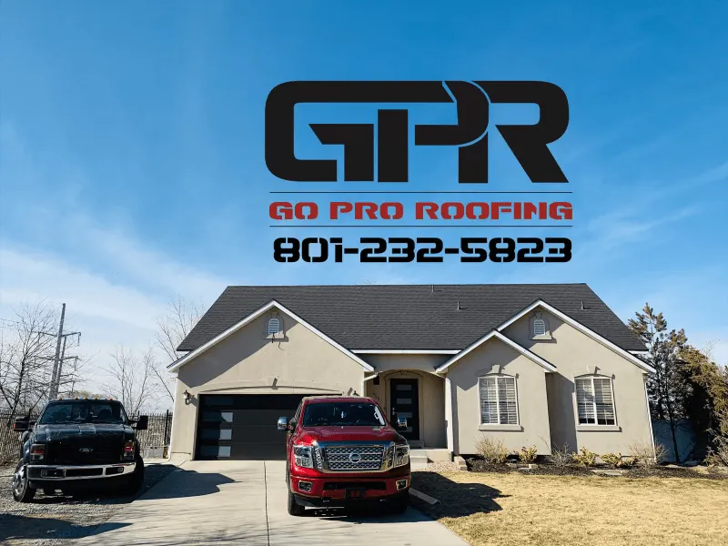

Free estimates · 24/7 emergency service
Roofing company in West Valley City. Pro-grade roofs.
Go Pro Roofing is a roofing company in West Valley City, Utah, serving homeowners across Salt Lake and Utah counties with roof repair, roof replacement and metal roofing. Licensed, insured, and an Owens Corning Preferred Contractor.
- Workmanship warranty
- 5 yr
- Material warranties
- up to 50 yr
- Most replacements
- 1–3 days
- Estimate & inspection
- $0
The lineup
Roofers in West Valley City, for every kind of roof
As a roofing contractor in West Valley City, we handle everything from a single leak to a full tear-off, for homes and businesses across the Salt Lake Valley.
Pick the right roof
Pick the right roof for the job
Three roof types we install most. Figures come from our own service pages; your roof’s size, pitch and materials set the real price.
Asphalt shingles
- Lasts about
- 20–30 years; premium architectural up to 50
- Typical cost in Utah
- $8,000–$15,000 for a new roof
- Best for
- Pitched roofs
Metal
- Lasts about
- 40–70 years
- Typical cost in Utah
- Higher up front than shingles; often cheaper long term
- Best for
- Long life, heavy snow
TPO membrane
- Lasts about
- 20–30 years
- Typical cost in Utah
- $5–$12 per sq. ft. installed
- Best for
- Flat and low-slope roofs
Compare all three in a table
| Roof type | Lasts about | Typical cost in Utah | Best for |
|---|---|---|---|
| Asphalt shingles | 20–30 years; premium architectural up to 50 | $8,000–$15,000 for a new roof | Pitched roofs |
| Metal | 40–70 years | Higher up front than shingles; often cheaper long term | Long life, heavy snow |
| TPO membrane | 20–30 years | $5–$12 per sq. ft. installed | Flat and low-slope roofs |
Certified & local
Credentials that come with every roof
- 01Owens Corning Preferred ContractorCertified to install Owens Corning roofing systems
- 02Master Roofer CertifiedRecognized by Owens Corning, CertainTeed and GAF
- 03Licensed & insuredServing Salt Lake and Utah counties
- 04Latino-owned & locally operatedExcelencia revolucionaria
Photo-documented
See every step, even the parts that get covered
“They took tons of photos before/during/after that were shared with me on a Google link which made it easy to share with my insurance company. My roof took one day which was glorious!”
Misty Jensen, Google review

Job site wall
Roofs across the Salt Lake Valley
Bluffdale, Sandy, Provo, Taylorsville, West Jordan and right here in West Valley City. See the gallery.







Reviews
What homeowners say about José’s team
Really appreciated the thorough explanation of my existing roof and the things taken into consideration during the replacement. They took tons of photos before/during/after that were shared with me on a Google link which made it easy to share with my insurance company. My roof took one day which was glorious! I had gotten a few bids and they were not the cheapest but somewhere in the middle, the difference was the quality of things like drip edge, flashing addressing old pipes. None of the other companies even talked about that stuff so costing a little more (wasn't a lot) was totally worth it. They even removed my old swamp cooler. My garage is detached so we didn't do it at the same time, when I do I'll definitely use them again.
Exceptional experience with this company from beginning to end of the process, which is unfortunately very rare these days. Showed up on time and did excellent work. Pointed out items that other companies who bid the job missed, and didn’t try to add them on simply to charge me more. This company is experienced, affordable and does beautiful work. Highly recommended in every way.
These guys showed up when they said no hassle got down to work cleaning while working kept my yard clean while working had my roof stopped and shingled in one day I can’t say enough about them they are a great company to work with
Fast and thorough repair. Fast responses to questions. They fixed a problem covered up by another company.
Jose was quick, efficient for the work he did. Also he was respectful of the plants he had to reach over to complete the job. And he cleaned everything up afterwards. Loved it and would recommend him to any and all who need work done!!!
Jose and the crew were professional and efficient and I would highly recommend them!
Where we work
West Valley City and the whole valley
Based at 5291 W Ted Wy in West Valley City, we serve homeowners across Salt Lake and Utah counties, including West Valley City, Sandy, Draper, Murray, Herriman and Riverton.
Questions
Common questions
From the blog:
- How Are Valleys Done on a Metal Roof?
- What is the Average Cost to Install a Metal Roof?
- 🏠 Don’t Wait for the Storm: 5 Signs Your Roof Needs Attention
What’s included in a free roof inspection?
Every free roof inspection includes a full walk-through of your roof, photos of any problem areas, and an honest written estimate. You’ll know whether you need a repair, replacement, or just routine maintenance—no pressure, no hidden fees.
How much does roof replacement near me cost?
Roof replacement costs in Utah typically range from $8,000–$15,000 depending on materials, size, and complexity. Contact our roofing contractors near you for a free roofing estimate.
Do you provide emergency roof repair near Salt Lake City?
Yes, we offer 24/7 emergency roofing services near you including storm damage repair, hail damage repair, and leaking roof repair across Salt Lake County and Utah County.
How long does a residential roof replacement take?
Most residential roof replacements in Utah take one to three days, depending on the roof size, materials, and weather. We handle permitting, cleanup, and disposal so your home stays protected throughout the process.
What types of roofing materials do you install?
We specialize in asphalt shingles, metal roofing, TPO/membrane systems, and flat roofing. Each option is available with up to a 50-year manufacturer warranty, and we’ll help you choose what fits your home and budget best.
Is Go Pro Roofing licensed and insured?
Yes! Go Pro Roofing is fully licensed, insured, and Master Roofer Certified. Our crew is trained by top brands such as Owens Corning, CertainTeed, and GAF for quality that meets every manufacturer’s standard.
Free estimates
Get a fast, honest roof quote
Free estimates and free roof inspections across Salt Lake and Utah counties. Transparent pricing with no hidden fees.